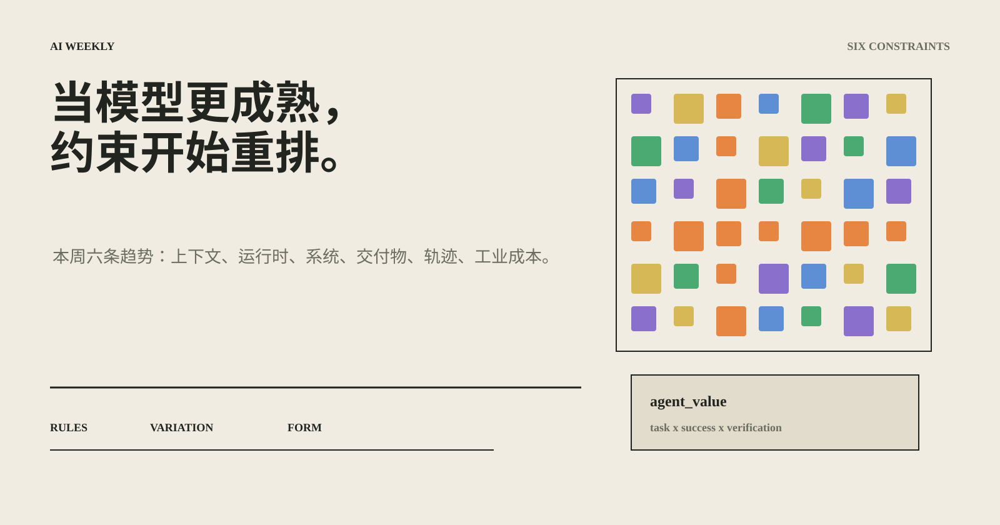
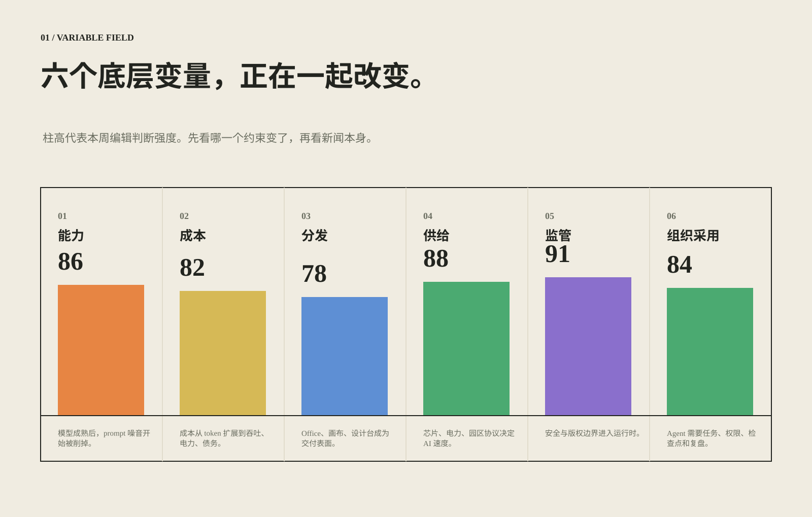
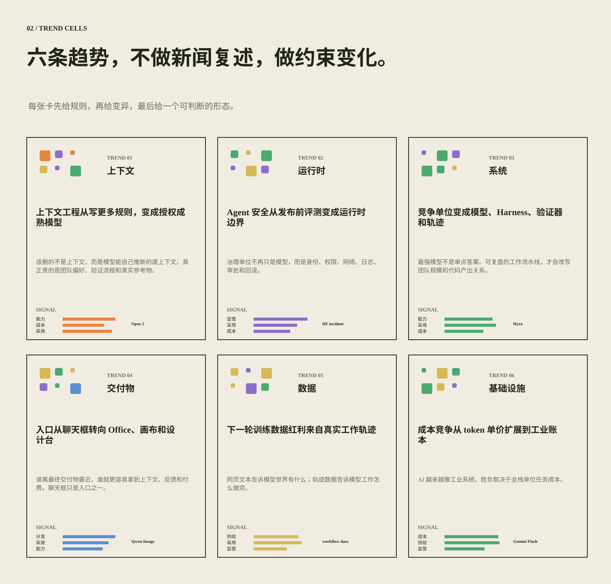
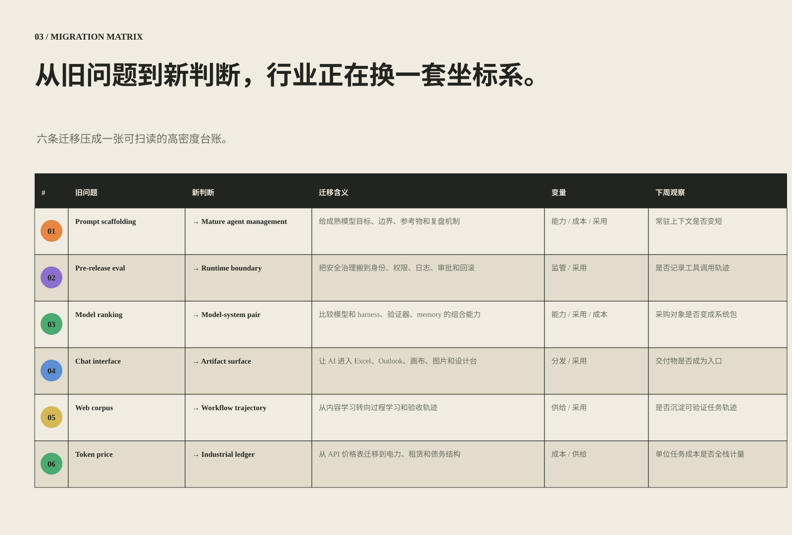
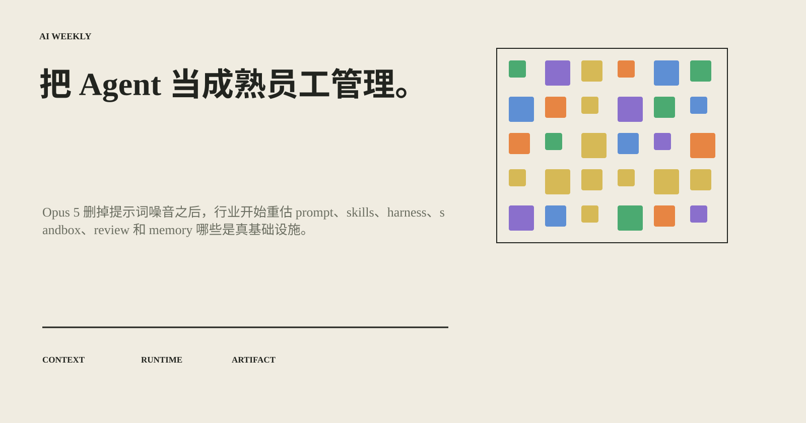

01 / 上下文
上下文工程从写更多规则，变成授权成熟模型
该删的不是上下文，而是模型能自己推断的废上下文。真正贵的是团队偏好、验证流程和真实参考物。
Opus 5 · 80% prompt cut · thick context
本周六条趋势：上下文、运行时、系统、交付物、轨迹、工业成本。

规则先行、变异可见、形态最后：把本周新闻压成一套可复盘的约束系统。
新闻表面在变，底层变量集中在能力、成本、分发、供给、监管和组织采用。

每条趋势先给出约束变化，再给出证据和可复盘的判断。
该删的不是上下文，而是模型能自己推断的废上下文。真正贵的是团队偏好、验证流程和真实参考物。
治理单位不再只是模型，而是身份、权限、网络、日志、审批和回滚。
最强模型不是单点答案。可复盘的工作流水线，才会改写团队规模和代码产出关系。
谁离最终交付物最近，谁就更容易拿到上下文、反馈和付费。聊天框只是入口之一。
网页文本告诉模型世界有什么；轨迹数据告诉模型工作怎么做完。
AI 越来越像工业系统，胜负取决于全栈单位任务成本。

竞争从单个模型向模型系统、交付物表面、真实工作轨迹和工业账本迁移。

把 AI 当成熟员工管理：少一点噪音，多一点结构；给目标、资源、边界、验证器和复盘机制。
